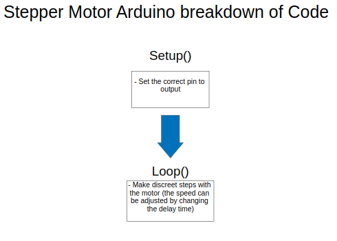

Convert Midi
We created a program in C++ that allowed us to take Midi files and convert them to 'drawn' notes that we could print out on a roll. If you wish to look at the code, feel free to check it out here.
We input a Midi file and copy it to a memory buffer that we can parse through and modify. We parse out information from the header chunk and track chunks to get information such as tempo, notes, and note timing.
From this we output to a text file. We use the box unicode charactor to represent notes. Each charactor represents a quarter note so we fill in as many spaces and box unicode charactors to make up each note and blank space. The image below shows what the text file looks like after the program takes a midi file, parses it, and prints the notes to a text file.
There are two main classes. The main class holds the functions that copy the midi file to a buffer (memory block), parse the buffer, and print the notes to a text file. The other class, Notes, holds information about each note such as its starting and ending time and the note it represents. The code could be split into better and more well-defined classes, but what we have now is functional. We are working to make the code cleaner. The summarized flow of the code is below.
Stepper Motor

The stepper motor is simply controlled with a program that allows for constant stepping of the motor. Once turned on, the stepper motor will continue stepping indefinitely (we did not have time to work in an automatic stop). For this code, please view this Github file. Looking forward, we plan on creating a basic interface for your computer to aid in speed adjustment.